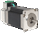
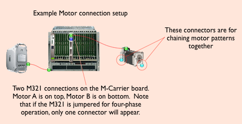
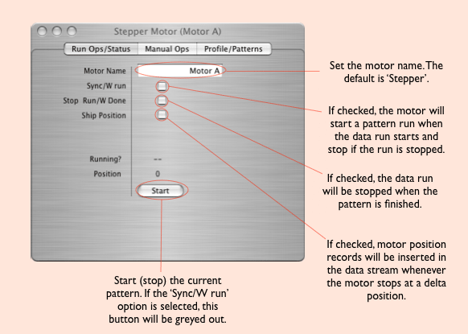
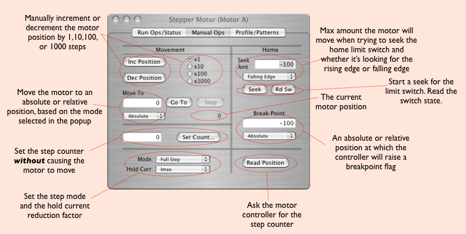
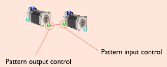

The stepper motor was developed to be used with the M321 M-module but can be used with any stepper motor controller that follows the proper protocols. The motor icon looks like this:

Double-clicking on a motor will bring up the motor dialog. The motor dialog has three tabs, Run Ops, Manual Ops, and Profile/Patterns.



Motor Patterns and Linking Motors
When running a motor pattern, motors can be chained together, i.e. for an x-y type scanning motion. Once the patterns are defined in the 'Profile/Patterns dialog the motors can be linked on the configuration page thus:

The motor on the left becomes the master pattern controller and is the slowest pattern to be cycled. The motor on the right will finish each of its pattern sweeps for every one delta step of the left motor. More than two motors may be chained in this way.
Motor Pattern Files
It is possible to use a file to define a sweep pattern if non-uniform delta steps are desired. The format of the file is like this:
4 100,1.0 150,1.0 200,1.0 50,0.5 ... ... 1000,1.0
The first entry is the number of times the pattern will be run before finishing. The rest of the file contains comma separated number pairs that define the absolute motor position to move to and the time in seconds to dwell at that position.
Motor Data Records
If the 'Ship Position' option is selected, then a motor activity record will be inserted into the data stream at various stages during the pattern run. The record is four 32-bit words long and has the following format:
xxxx xxxx xxxx xxxx xxxx xxxx xxxx xxxx- word 1
^^^^ ^^^^ ^^^^ ^^----------------------- the data ID
^^ ^^^^ ^^^^ ^^^^ ^^^^- the length (always 4)
xxxx xxxx xxxx xxxx xxxx xxxx xxxx xxxx- word2
unix ut time
xxxx xxxx xxxx xxxx xxxx xxxx xxxx xxxx- word3
^^^^------------------------------------ crate number
^^^^ ^----------------------------- M-Carrier Vme slot number
^^^-------------------------- Motor controller M-module slot
^^----------------------- Motor number
^^^^---------------- Motor state (see below)
xxxx xxxx xxxx xxxx xxxx xxxx xxxx xxxx- word 4
motor position
The motor state in word 3 has the following meaning:
- 0 pattern is starting
- 1 moving to start position
- 2 motor is moving
- 3 at delta position. Motor will start dwell cycle if dwell time is non-zero.
- 4 at end of sweep
- 5 a delta step is done
Notice that not all of these states are inserted in the data stream at this time. You will only see states 0, 1, 3, 4, and 5. The other states are internal and do not cause a record to be shipped. Note also that state 5 will not be shipped if the dwell time is zero.